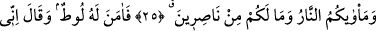

ÎMAN EDEN BİR KAVİM İÇİN
İBRETLER VARDIR
23. Allah’ın âyetlerini ve O’na kavuşmayı inkâr edenler -işte onlar- benim
rahmetimden ümitlerini kesmişlerdir ve onlar için acıklı bir azap vardır.
24. Kavminin (İbrahim’e) cevabı ise: “Onu öldürün yahut yakın!” demelerinden
ibaret oldu. Ama Allah onu ateşten kurtardı. Doğrusu bunda, îman eden bir kavim
için ibretler vardır.
25. (İbrahim onlara) dedi ki: Siz, sırf aranızdaki dünya hayatına has muhabbet
uğruna Allah’ı bırakıp birtakım putlar edindiniz. Sonra kıyamet günü (gelip
çattığında ise) birbirinizi tanımazlıktan gelecek ve birbirinize lânet okuyacaksınız.
Varacağınız yer cehennemdir ve hiç yardımcınız da yoktur.
26. Bunun üzerine Lût ona îman etti ve (İbrahim): Doğrusu ben
Rabbim’e(emrettiği yere) hicret ediyorum. Şüphesiz O, mutlak güç ve hikmet
sâhibidir, dedi.
27. Ona İshak ve Ya’kub’u bağışladık. Peygamberliği ve kitapları, onun soyundan
gelenlere verdik. Ona dünyada mükâfatını verdik. Şüphesiz o, âhirette de sâlihler